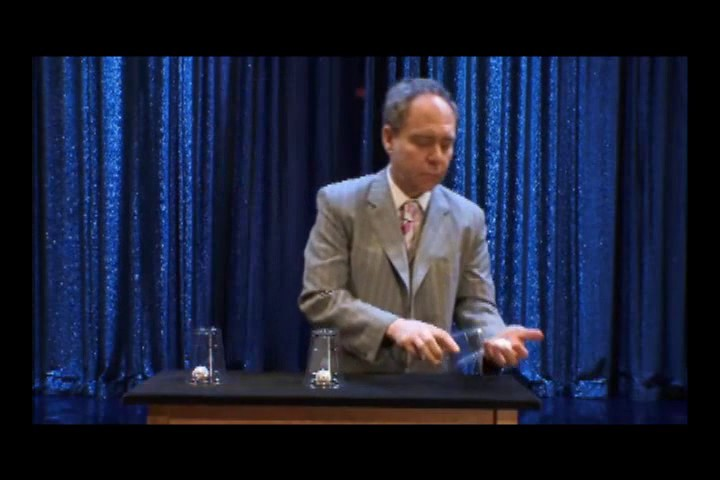
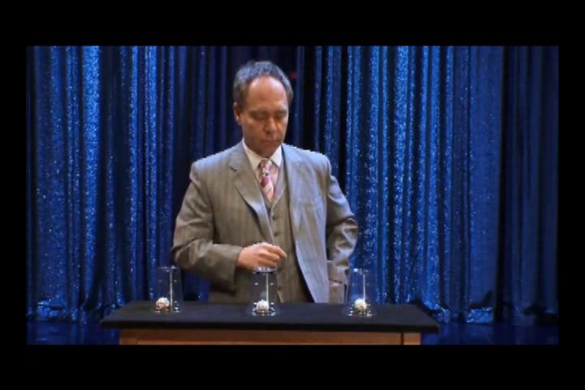
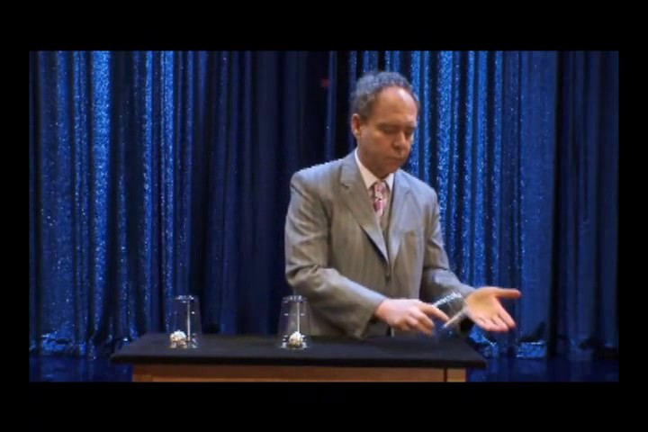
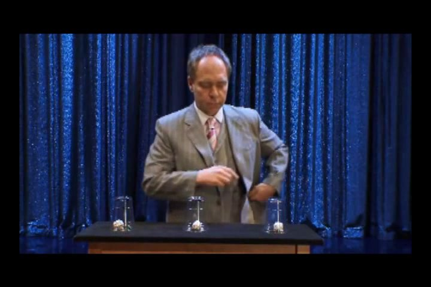
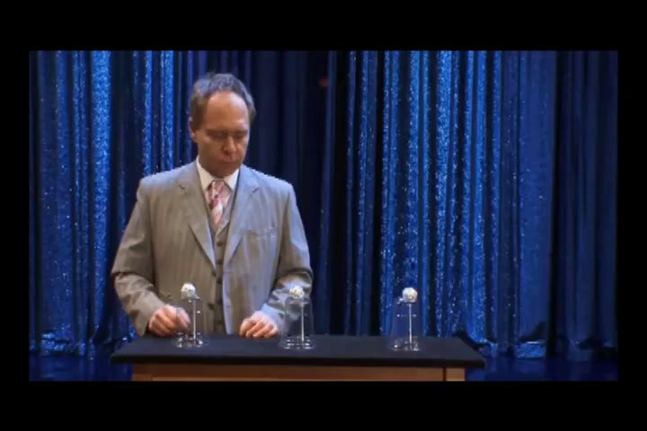
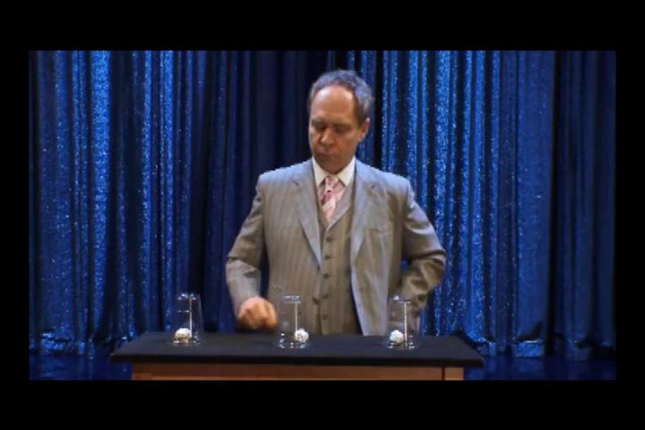
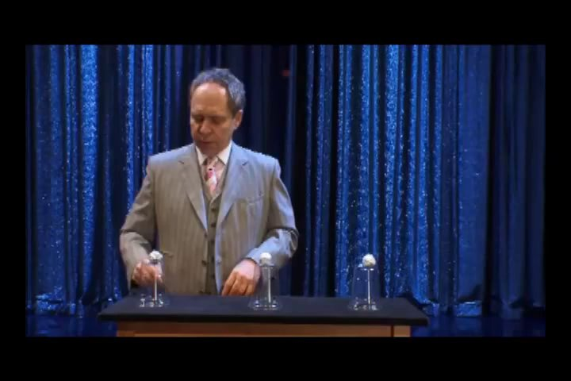
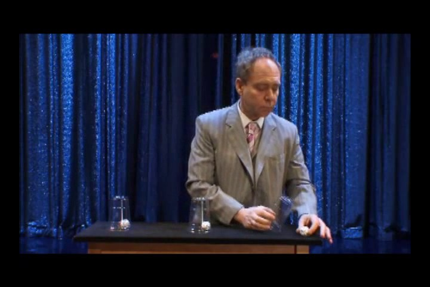
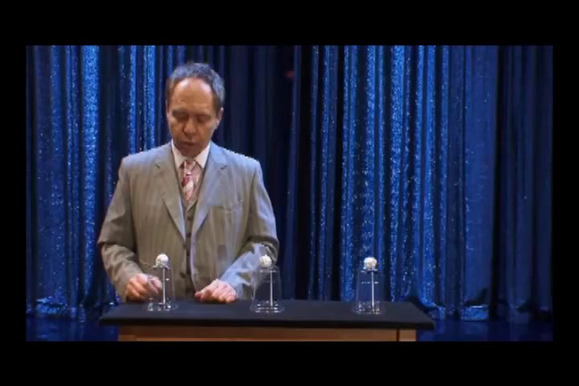
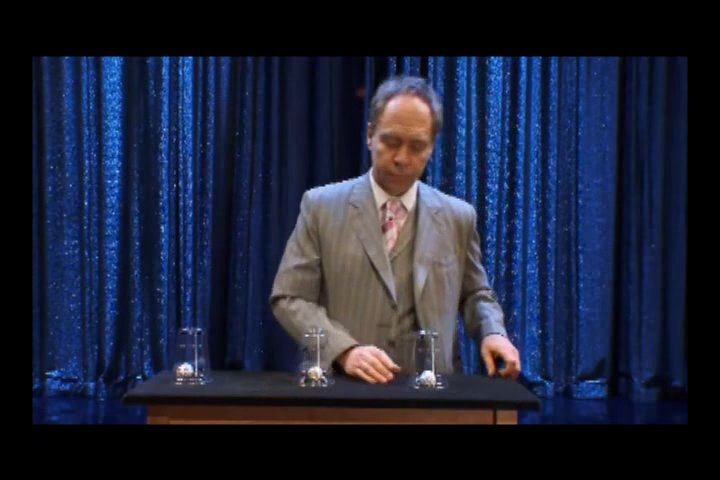

All five clips use transparent cups and include a late reveal. None are recommended as occluded hidden_state gold. Candidate questions below are visible-event proposals only.
CLIP peerj_01_19_s003



- Source condition
- Standard
- What the video appears to show
- Transparent cups. A ball starts on top of each cup. At the third cup the top ball is in the magician’s open palm. Afterward a ball is visible under all three cups. Cups are later lifted.
- Candidate question
- Where is the ball that started on top of the right-hand cup immediately after it leaves the cup?
- Candidate answer
- in the magician's hand
- Evidence
- VERIFIED_FROM_SOURCE_AND_VIDEO — frame ~5.51s shows the ball in an open palm; paper Standard = ball falling to the hand.
- Confidence
- HIGH for that visible event. NOT_SUITABLE_FOR_HIDDEN_STATE_TASK (no occlusion; reveal leakage).
- Human decision
- [APPROVE][EDIT][REJECT] — unresolved
CLIP peerj_01_19_s004



- Source condition
- No ball
- What the video appears to show
- Transparent cups. Opening: balls on the left and center cups only; none on the right. The magician still tilts the empty third cup over an empty palm. A ball later appears under all three cups.
- Candidate question
- At the start of the clip, is there a ball on top of the right-hand cup?
- Candidate answer
- no
- Evidence
- VERIFIED_FROM_SOURCE_AND_VIDEO — opening frame and paper No-ball definition.
- Confidence
- HIGH for the start state. NOT_SUITABLE_FOR_HIDDEN_STATE_TASK (visible in frame 0).
- Human decision
- [APPROVE][EDIT][REJECT] — unresolved
CLIP peerj_01_19_s005



- Source condition
- Lift
- What the video appears to show
- Transparent cups. At the third cup the magician holds the former top ball up at about shoulder height, then a ball is visible under all three cups.
- Candidate question
- During the third-cup action, does the magician lift the former top ball to about head/shoulder height?
- Candidate answer
- yes
- Evidence
- VERIFIED_FROM_SOURCE_AND_VIDEO — frames ~5.9–6.1s; paper Lift. Pocket destination not verified on video.
- Confidence
- HIGH for the lift. NOT_SUITABLE_FOR_HIDDEN_STATE_TASK.
- Human decision
- [APPROVE][EDIT][REJECT] — unresolved
CLIP peerj_01_19_s006 — review this one first



- Source condition
- Table
- What the video appears to show
- Transparent cups. The third cup’s former top ball is placed on the table. A later frame shows three balls under cups plus a fourth ball on the table.
- Candidate question
- After the magician handles the right-hand cup, is there a ball sitting on the table beside the cups (not only under them)?
- Candidate answer
- yes
- Evidence
- VERIFIED_FROM_SOURCE_AND_VIDEO — frames ~6.2s and ~6.7s; paper Table.
- Confidence
- HIGH for the extra on-table ball. Strongest visible candidate. Still NOT_SUITABLE_FOR_HIDDEN_STATE_TASK unless you accept a visible-location proxy.
- Human decision
- [APPROVE][EDIT][REJECT] — unresolved
CLIP peerj_01_19_s007



- Source condition
- Drop
- What the video appears to show
- Transparent cups. The third cup is tilted; a blurred white object appears at the bottom-right table edge. The landing (floor vs fully off-screen) is not clear in sampled frames.
- Candidate question
- During the third-cup action, does the former top ball remain on the table next to the cups?
- Candidate answer
- AMBIGUOUS — do not use as gold
- Evidence
- SOURCE_ONLY for floor; partial video for departure (~6.0s). NOT_ESTABLISHED for landing.
- Confidence
- LOW–MEDIUM. NOT_SUITABLE_FOR_HIDDEN_STATE_TASK.
- Human decision
- [APPROVE][EDIT][REJECT] — unresolved